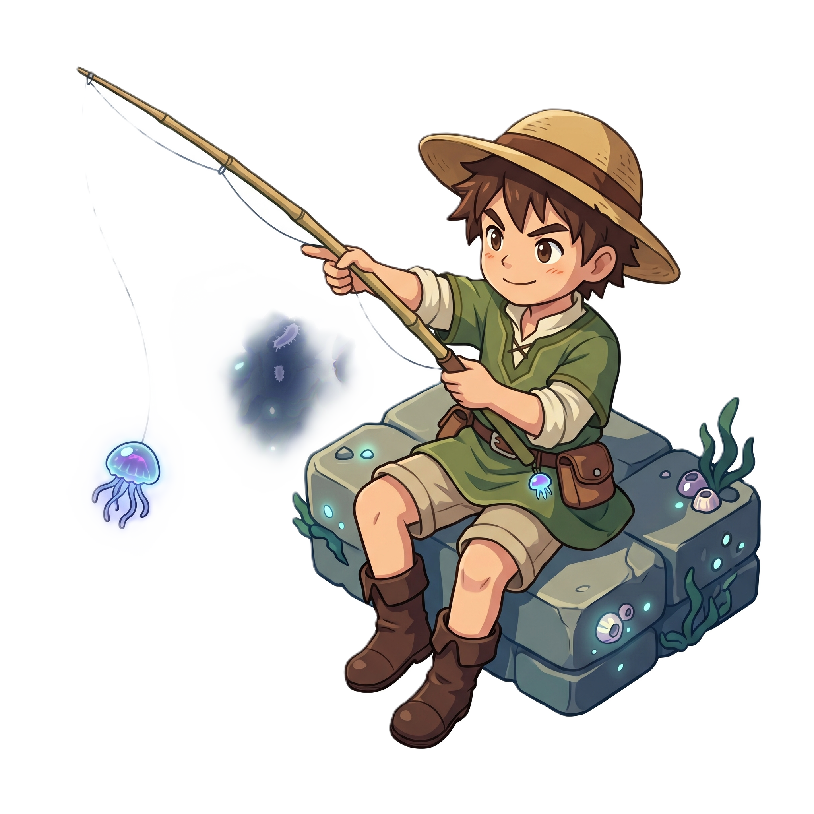

🎣 CẦN ĐANG CONG...
✖
BẮT ĐƯỢC RỒI!
🐟
LEGENDARY

➖
➕
🏕️
🔴
🛒 CỬA HÀNG
⚙️ CÀI ĐẶT
💰
0
GOLD
Vật phẩm
🧪 Thức ăn cá
5 🪙
Giỏ cá của bạn
(Giỏ cá đang trống)
Mẹo: Cá hiếm bán được nhiều tiền hơn!
Người Câu Cá:
Nhân vật Mặc định
Nhân vật Phong cách 2
Nhân vật Phong cách 3
Vách Đá (Chân đế):
Vách Đá Mặc định
Vách Đá Phong cách 2
Vách Đá Phong cách 3
Môi Trường Biển:
Biển Mặc định
Biển Phong cách 2
Biển Phong cách 3
Tên file ảnh yêu cầu trong thư mục /assets:
-
Nhân vật:
fisherman.png, fisherman2.png, fisherman3.png
-
Vách đá:
vach-da.png, vach-da2.png, vach-da3.png
-
Biển:
bien-1.png... | bien-t2-1.png... | bien-t3-1.png...